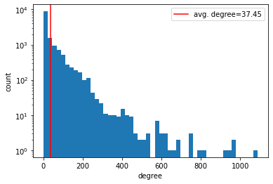
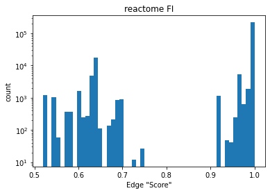

Creating a Global Graph using the Reactome Functional Interaction (FI) network
We will create a global graph (e.g., a graph spanning all protein/gene entities; used as parent for individual perturbation subgraphs) using the functional interaction (FI) network provided by (1). The FI network provided by Wu et. al, aims at constructing a pathway-based analysis system. To do this they:
"Construct a protein functional interaction network by extending curated pathways with non-curated sources of information, including protein-protein interactions, gene coexpression, protein domain interaction, Gene Ontology (GO) annotations and text-mined protein interactions, which cover close to 50% of the human proteome" (1).
More recent database updates have been provided, which has improved the proteome coverage. The data and information can be found here. We plan to use the most recent version, as of 3/8/22 we are using Version 2021.
For this network, we make the assumption that each gene -> rna -> protein maps 1:1:1 and therefore we can collapse genes, rna and protein into a single node, which represents the state of all 3. Furthermore, this allows complex edge interactions beyond merely protein-protein interactions or gene regulatory information.
Data Format
The reactome FI data is provided in the form of edge list with features:
- Annotation: The edge type(s)
- Direction: The edge direction [-,|,<,>]
- Score: Edge confidence, only applicable if the edge is predicted.
Gene1 Gene2 Annotation Direction Score Gene1_ensembl Gene2_ensembl
16-5-5 CDC42 predicted - 0.97 None ENSG00000070831
16-5-5 PARD3 predicted - 1.00 None ENSG00000148498
16-5-5 PARD3B predicted - 1.00 None ENSG00000116117
A1CF APOBEC1 catalyzed by; complex; input <- 1.00 ENSG00000148584 ENSG00000111701
A1CF EP300 expression regulated by <- 1.00 ENSG00000148584 ENSG00000100393
Top 10 most common edge annotations and directions. As you can see, the edge annotation can include multiple labels.
Annotation Direction Count
--------------------------------------------------------------
complex; input - 64959
predicted - 40443
complex - 17248
catalyzed by <- 11145
catalyze -> 9563
input - 8240
catalyze; catalyzed by; complex; input <-> 7707
activate -> 5658
activated by <- 5558
catalyze; catalyzed by; input <-> 5476
Network Characteristics
NOTE: We filter to the largest connected component.
Number of Nodes: 13751
Number of Edges: 257629
Average Cluster Coef: 0.38
Network Density: 0.003


Overlap with LINCS L1000 platform
Data source
NOTE: for this EDA we use the largest component.
To understand the overlap between L1000 genes and Reactome FI entities, we map the overlapping sets and compare. The L1000 dataset has 3 data subsets:
landmark: ~1000 genes RNA abundance explictly measured using a Luminex bead assay, more info here.
inferred: ~2000 genes with inferred RNA abundance, but not apart of the
best inferredsubset. Lower accuracy estimates.best infered: ~9000 genes with high confidence inferred RNA abundance.
To map genes between reactome FI and LINCS L1000 genes, we use ensembl gene identifiers - which does not have perfect mapping (e.g., we lose some genes in mapping from XXX -> enesmbl).
############ landmark #############
# of lincs genes dropped in ensembl mapping: 10
# of reactome genes dropped in ensembl mapping: 344
# lincs genes: 968
# reactome genes: 13609
# overlapping genes (lincs & reactome) 837
percentage of reactome: 6.2
percentage of lincs: 86.5
############ best inferred #############
# of lincs genes dropped in ensembl mapping: 129
# of reactome genes dropped in ensembl mapping: 344
# lincs genes: 9067
# reactome genes: 13609
# overlapping genes (lincs & reactome) 7394
percentage of reactome: 54.3
percentage of lincs: 81.5
############ all #############
# of lincs genes dropped in ensembl mapping: 187
# of reactome genes dropped in ensembl mapping: 344
# lincs genes: 12140
# reactome genes: 13609
# overlapping genes (lincs & reactome) 9808
percentage of reactome: 72.1
percentage of lincs: 80.8
Overlap with CLUE compound information
Data source, More information can be found here.
To ensure that we have drug -> protein overlap in our reactome FI graph we convert all protein targets from the CLUE compound information dataset to ensembl genes and compare the overlap in reactome FI network.
# NA target observations (filtered): 31275
# of targets without ensembl id: 1
# of targets not in reactome FI network: 181
# of targets in reactome FI network: 7864
# of drugs in reactome FI network: 3109
# of unique drugs targets in FI network: 836
Of note, cmap_name is not a 1:1 mapping with pert_id.
Edge Annotation Feature Encoding
Word annotation features are encoded as binary variable word presences, e.g., if a word is present in the annotation, then that label has a 1 value, otherwise 0.
NOTE: this is "hot-encoding" but not "one-hot encoding"; edges can have multiple annotations.
example:
edge annotation: "catalyzed by; complex; input"
annot. word list: ['catalyzed', 'complex', 'input', 'random']
edge feature: [1,1,1,0]
See below a the edge annotation word list and respective word frequencies across all edges in the FI network.
word label -------------------- Frequency % (across all edges)
__________________________________________________________
methylation ------------------- 0.0019
glycosylation ----------------- 0.0037
glycosylated ------------------ 0.0044
dephosphorylated -------------- 0.0063
state ------------------------- 0.0102
change ------------------------ 0.0102
repression -------------------- 0.0183
repressed --------------------- 0.0197
ubiquitinated ----------------- 0.0348
interaction ------------------- 0.0565
dissociation ------------------ 0.0655
ubiquitination ---------------- 0.0911
PCrel ------------------------- 0.2602
dephosphorylation ------------- 0.3221
phosphorylated ---------------- 0.5218
inhibition -------------------- 0.9153
ECrel ------------------------- 0.9411
effect ------------------------ 1.0804
indirect ---------------------- 1.0912
GErel ------------------------- 1.1847
compound ---------------------- 1.2137
regulates --------------------- 1.3004
regulated --------------------- 1.4183
phosphorylation --------------- 1.6001
binding/association ----------- 2.4961
inhibited --------------------- 2.8101
activation -------------------- 2.8267
reaction ---------------------- 3.4820
inhibite ---------------------- 3.4847
expression -------------------- 3.7661
inhibit ----------------------- 4.9503
activated --------------------- 5.7617
activate ---------------------- 8.9841
PPrel ------------------------- 10.2082
catalyzed --------------------- 10.3590
catalyze ---------------------- 14.3489
predicted --------------------- 19.7095
input ------------------------- 47.3727
complex ----------------------- 49.8622
Edge Direction Encoding
Our network is set up as a directed network and edge directionality is intended to be primarily specified by this mechanism. For bi-directional edges ('-' or '<->'), two opposing edges are included in our network. For some more complex edge annotations and directions (e.g., multiple edge annotations or alternate-type bi-directionality), encoding edge direction may be a useful feature. To do this, we will create 2 features that can have the possible values [-1,0,1].
Edge directions can be though of as 3 element string:
left_char,center_char,right_char
center_char is always '-' and therefore unnecessary to encode
left_char can be "|" (-1) or "<" (1) or neither (0), this will be the first feature
right_char can be "|" (-1) or ">" (1) or neither (0), this will be the second feature
The edge direction strings used in reactome FI network.
Direction | Count | feature
---------------------------------------
- | 144182 | [0,0]
<- | 40858 | [1,0]
-> | 39438 | [0,1]
<-> | 13177 | [1,1]
|- | 5499 | [-1,0]
-| | 4690 | [0,-1]
|-> | 1454 | [-1,1]
<-| | 1107 | [1,-1]
|-| | 79 | [-1,-1]
Implementation
The reactome FI network can be constructed by:
edge_index, edge_attr, nodelist, annot_words = gnn_cdr.reactomefi.create_reactome_fi_graph()
References
- Wu, G., Feng, X. & Stein, L. A human functional protein interaction network and its application to cancer data analysis. Genome Biol 11, R53 (2010). https://doi.org/10.1186/gb-2010-11-5-r53